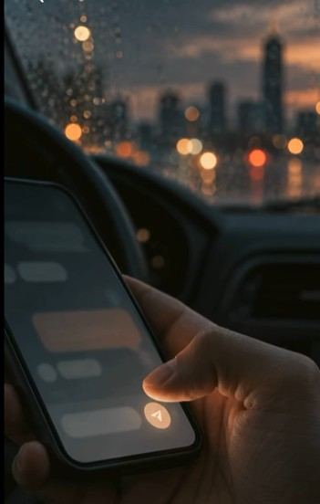

What if a more peaceful tomorrow begins with what we choose to practice today?
We all want peace, don't we? A peaceful day. A peaceful heart. A life that feels steady, meaningful, and close to Allah.
But how do we get there? We pray, work hard, care for our families, fulfill our responsibilities, and try to make the right choices. Yet even when we do everything right, peace can still feel out of reach.
Work gets demanding. Relationships become complicated. Responsibilities pile up. Even when life looks fine from the outside, we can still feel unsettled inside.
We all know, and have often heard, that Islam is a way of life. The question is: how do we live it?
Tomorrow Takes Practice uses twelve relatable stories to show how Islamic values can guide daily choices and bring greater peace.
The stories show readers how to use principles such as tafakkur (reflection), muraqabah (mindfulness of Allah), sabr (patience), shukr (gratitude), tawakkul (trust in Allah), ikhlas (sincerity), amanah (responsibility), istiqamah (steadfastness), tawbah (repentance), rahmah (compassion), and khidmah (service) in conversations, decisions, mistakes, and unexpected challenges.
Each chapter connects an Islamic value to an everyday challenge. Islamic teachings provide the foundation, while insights from psychology and behavioral research explain the thoughts, emotions, and habits that can make these situations difficult. The chapter then shows how to put the value into practice.
Each chapter ends with muhasabah, a simple end-of-day check-in. Readers can look back honestly, recognize Allah's blessings, notice where they could show more mercy, and choose one sincere step for tomorrow.
Life will still be busy, difficult, and far from perfect. This book helps us face it with more purpose. It teaches us to think clearly under pressure, respond with sabr, recognize our blessings through shukr, show rahmah to ourselves and others, speak with care, trust Allah through tawakkul, and return to Him through tawbah when we make mistakes.
Islam is a way of life, and Tomorrow Takes Practice helps you live it, one day at a time.
Because a more peaceful tomorrow begins with what you practice today.
A short look inside Tomorrow Takes Practice — why Leena wrote it, and how one value a week becomes a calmer day.

Watch the video